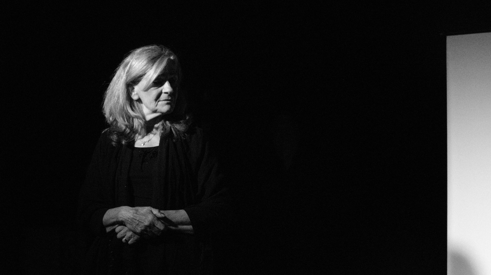
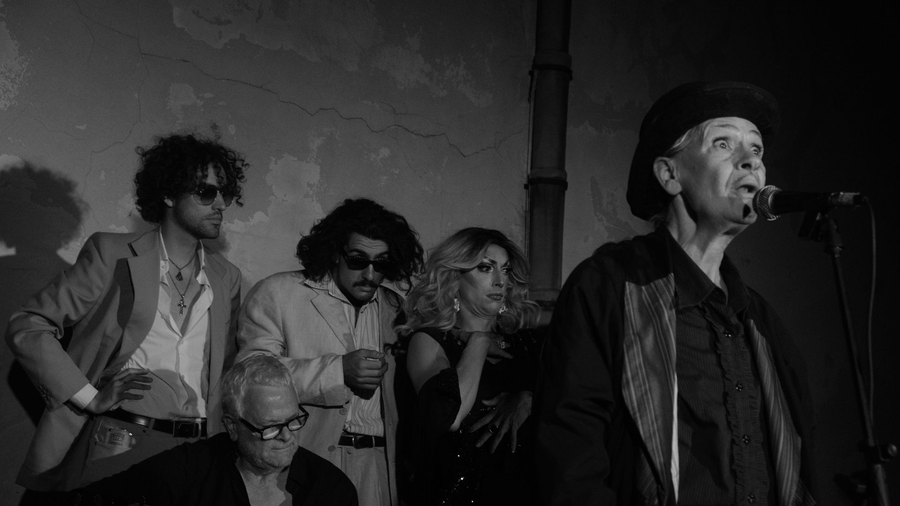
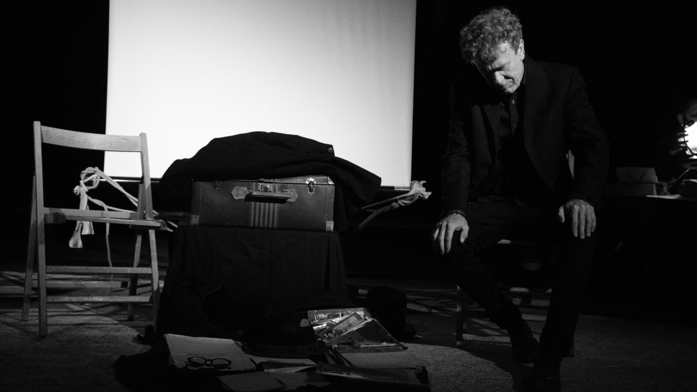

Compagnia di Giro
Galleria



Note
“Nessuno nasce imparato”, diceva qualcuno…
È proprio vero, nessuno nasce sapendo chi è, si impara a diventare e talvolta lo si fa grazie agli insegnanti che per mestiere, o per missione, passano ad altri il proprio sapere, sperando che ci sia almeno un allievo che superi il maestro e porti questo sapere in là, più in là; trasformandolo, facendolo proprio, riadattandolo ai tempi, ma mantenendo i principi fondamentali che lo rendono unico. Bene, noi arriviamo da un tempo lontano, siamo figli di quella che fu una Compagnia di Giro.
I nonni iniziarono, prima e durante la guerra; i genitori continuarono, noi siamo nati. Siamo nati lungo il cammino e abbiamo provato quella bellezza. Parliamo di una bellezza semplice, fatta di scambi tra attore e spettatore.
Qualcosa di indispensabile. La gente ama il teatro se il teatro ama la gente, la rispetta, non crea distinzioni, la incontra, la desidera, la fa sedere come sulla sedia di casa. Non è teatro di piazza, né di strada, non è di sala, non è commedia dell’arte, né prosa o ricerca… Ma è tutto questo allo stesso tempo, nello scambio puro e incondizionato con lo spettatore.
Quell’insegnamento c’è rimasto dentro, come radice nella terra, è il nostro mestiere e la nostra missione, è il nostro vivere, tanto da non poterne fare a meno. Negli anni ottanta, quando Franco Seghizzi capì che di compagnie di giro non ce n’erano più, chiamò la propria compagnia “I Superstiti”. Poi se ne andò.
Credo che lui non lo sapesse, perché di sicuro non gliene importava niente, ma era un Maestro…
— Loris Seghizzi
Approfondimento